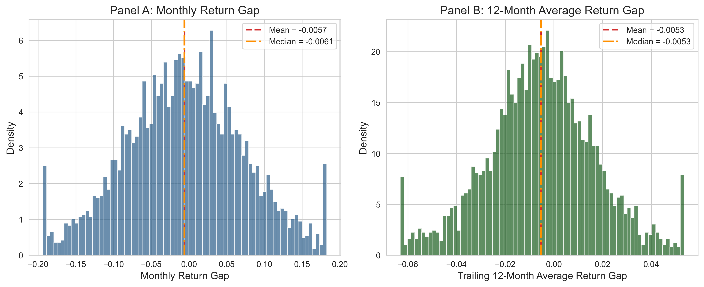
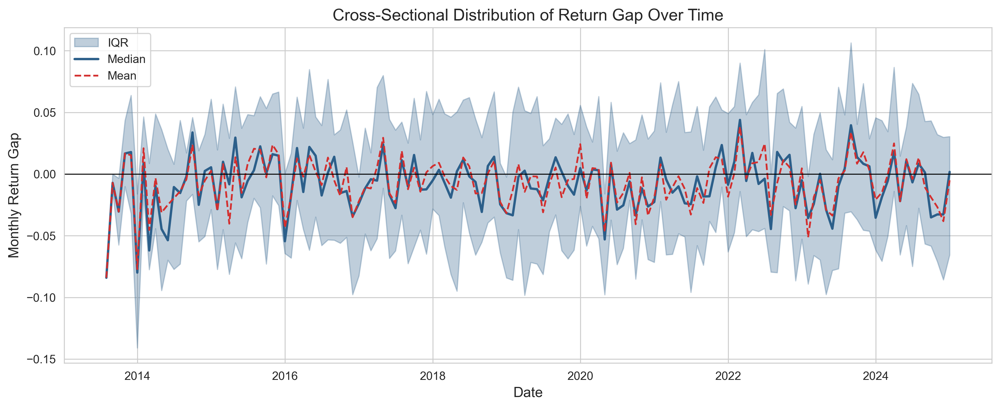
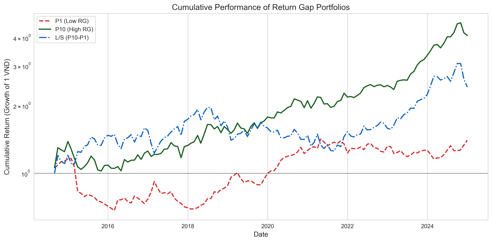
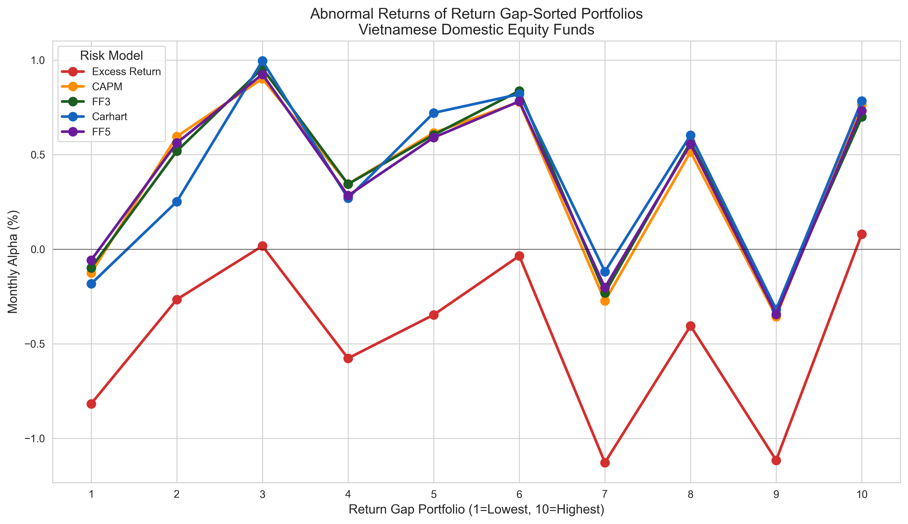
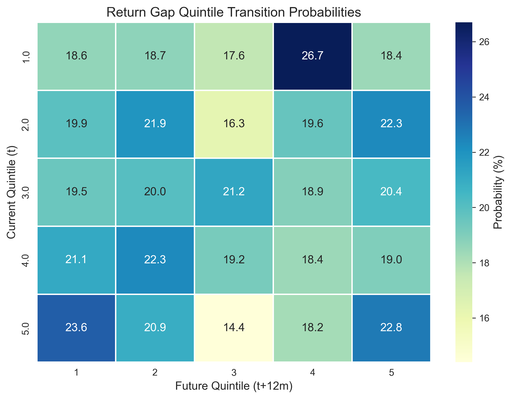
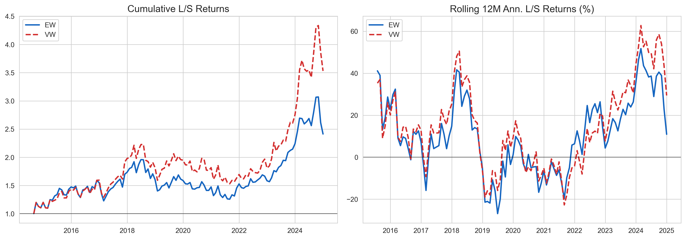
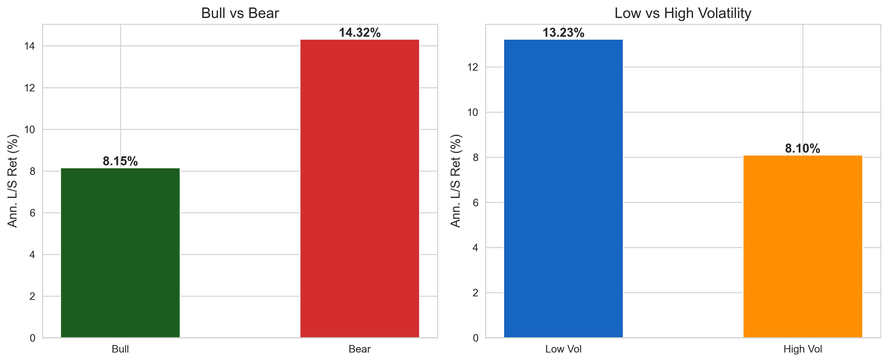

import pandas as pd
import numpy as np
import matplotlib.pyplot as plt
import seaborn as sns
import statsmodels.api as sm
from statsmodels.regression.linear_model import OLS
from scipy import stats
from datetime import datetime, timedelta
from dateutil.relativedelta import relativedelta
import warnings
warnings.filterwarnings("ignore")
plt.rcParams.update({
"figure.figsize": (10, 6),
"font.size": 12,
"axes.titlesize": 14,
"axes.labelsize": 12,
"xtick.labelsize": 10,
"ytick.labelsize": 10,
"legend.fontsize": 10,
"figure.dpi": 150,
"savefig.dpi": 300,
"font.family": "serif",
})
sns.set_style("whitegrid")
np.random.seed(42)36 Chênh lệch lợi nhuận (Return Gap): Đo lường các hành động không quan sát được của nhà quản lý quỹ
Các nhà quản lý quỹ tương hỗ có quyền tự quyết đáng kể trong các quyết định đầu tư giữa các ngày công bố danh mục bắt buộc. Mặc dù khung pháp lý yêu cầu công bố định kỳ các khoản nắm giữ, những hành động được thực hiện giữa các ngày công bố này (ví dụ: giao dịch, định thời điểm thị trường, cho vay chứng khoán và quản lý tiền mặt mang tính chiến lược) phần lớn vẫn không thể quan sát được đối với nhà đầu tư. Những hành động không quan sát được này có thể tác động đáng kể đến hiệu suất quỹ, theo hướng tích cực thông qua hoạt động giao dịch giữa kỳ khéo léo, hoặc theo hướng tiêu cực thông qua chi phí đại diện và hành vi ẩn giấu.
Kacperczyk, Sialm, và Zheng (2008) đã phát triển thước đo Return Gap để nắm bắt tác động tổng hợp của các hành động không quan sát được này lên lợi nhuận của quỹ. Return Gap được định nghĩa là chênh lệch giữa lợi nhuận thực tế mà quỹ báo cáo và lợi nhuận giả định của một danh mục được đầu tư một cách máy móc vào các khoản nắm giữ được công bố gần nhất của quỹ. Viết dưới dạng công thức:
\[ \text{Return Gap}_{i,t} = R_{i,t}^{\text{Actual}} - R_{i,t}^{\text{Holdings}} \tag{36.1}\]
trong đó \(R_{i,t}^{\text{Actual}}\) là lợi nhuận ròng sau chi phí do quỹ \(i\) báo cáo trong tháng \(t\), được điều chỉnh theo chi phí để thu được lợi nhuận gộp, và \(R_{i,t}^{\text{Holdings}}\) là lợi nhuận mua và nắm giữ giả định được tính từ các khoản nắm giữ danh mục được công bố gần nhất.
Return Gap dương cho thấy các hành động không quan sát được của nhà quản lý quỹ (ví dụ: giao dịch giữa kỳ, quản lý tiền mặt hoặc các hoạt động khác) đã tạo thêm giá trị so với việc sao chép thụ động các khoản nắm giữ đã công bố. Ngược lại, Return Gap âm kéo dài gợi ý hoạt động giữa kỳ làm hủy hoại giá trị, có thể do chi phí đại diện, thực thi giao dịch kém hoặc phí ẩn.
36.1 Vì sao Return Gap quan trọng
Return Gap có ý nghĩa kinh tế vì nhiều lý do:
- Tính bền vững của hiệu suất: Các quỹ thuộc decile Return Gap cao nhất có xu hướng vượt các quỹ thuộc decile thấp nhất 1-2% mỗi năm trên cơ sở điều chỉnh theo rủi ro, và mức chênh lệch này kéo dài theo thời gian (Kacperczyk, Sialm, và Zheng 2008).
- Phát hiện vấn đề đại diện: Return Gap âm kéo dài có thể báo hiệu các chi phí ẩn như giao dịch quá mức, chi phí tác động thị trường, thỏa thuận soft-dollar hoặc khai thác giá lỗi thời.
- Bổ sung cho các thước đo truyền thống: Không giống các chỉ số dựa trên alpha vốn trộn lẫn kỹ năng chọn cổ phiếu với kỹ năng giao dịch giữa kỳ, Return Gap tách riêng thành phần hiệu suất quy cho các hành động được thực hiện giữa các ngày công bố.
- Hàm ý đối với cơ quan quản lý: Ở các thị trường mới nổi như Việt Nam, nơi tần suất công bố thông tin và sự giám sát của cơ quan quản lý có thể khác với thị trường phát triển, Return Gap có thể đóng vai trò hệ thống cảnh báo sớm cho việc bảo vệ nhà đầu tư.
36.2 Các khoản chi trả ẩn: Chia sẻ doanh thu, phân phối và thiết kế danh mục lựa chọn
Return Gap định lượng hệ quả của những gì nhà quản lý làm giữa các ngày công bố. Một nhánh nghiên cứu bổ sung cho thấy kết quả của nhà đầu tư cũng được định hình ngang bằng bởi các khoản chi trả luân chuyển giữa quỹ và các đơn vị phân phối, phần lớn nằm ngoài tầm nhìn của nhà đầu tư. Pool, Sialm, và Stefanescu (2026) đưa ra bằng chứng rõ ràng nhất từ các kế hoạch 401(k) của Hoa Kỳ, nơi đơn vị quản lý hồ sơ (recordkeeper) quản lý kế hoạch thường được trả công gián tiếp thông qua chia sẻ doanh thu: các khoản hoàn trả do các quỹ tương hỗ bên thứ ba trong danh mục lựa chọn của kế hoạch chi trả từ tỷ lệ chi phí của họ. Những thỏa thuận này làm méo mó chính danh mục lựa chọn: các quỹ chia sẻ doanh thu có nhiều khả năng được thêm vào và ít khả năng bị loại bỏ hơn, và các kế hoạch chia sẻ doanh thu đắt đỏ hơn nói chung, với tỷ lệ chi phí cao hơn không được bù đắp bởi phí trực tiếp thấp hơn hay hiệu suất tốt hơn. Các khoản hoàn trả cũng tăng theo sức mạnh thị trường của đơn vị quản lý hồ sơ, phù hợp với việc các quỹ chia sẻ doanh thu để mua quyền tiếp cận tài sản hưu trí.
Kết quả này mở rộng một nhánh nghiên cứu lâu đời hơn về xung đột phân phối trong quản lý tài sản ủy thác. Pool, Sialm, và Stefanescu (2016) cho thấy các công ty quản lý quỹ tương hỗ đóng vai trò người được ủy thác của các kế hoạch 401(k) ưu ái các quỹ trực thuộc chính họ trong các quyết định về danh mục lựa chọn, đặc biệt là các quỹ hoạt động kém, và người tham gia không đảo ngược sự ưu ái này. Sialm, Starks, và Zhang (2015) thấy rằng dòng vốn của các kế hoạch hưu trí đóng góp xác định phản ứng mạnh với hiệu suất, nhưng phần lớn là do các nhà tài trợ kế hoạch thêm và bớt các lựa chọn trong danh mục, điều này tập trung ảnh hưởng vào chính các trung gian mà chia sẻ doanh thu nhắm tới. Ngoài các kế hoạch hưu trí, Bergstresser, Chalmers, và Tufano (2009) ghi nhận rằng các quỹ bán qua môi giới có hiệu suất kém hơn các quỹ bán trực tiếp ngay cả trước phí phân phối, và Christoffersen, Evans, và Musto (2013) cho thấy các khoản chi trả cho nhà môi giới dự báo dòng vốn vào quỹ và hiệu suất thấp hơn sau đó, cho thấy rằng thù lao của trung gian, chứ không chỉ cầu của nhà đầu tư, dẫn dắt dòng tiền.
Những phát hiện này quan trọng đối với Việt Nam vì ngành quỹ của nước ta do kênh phân phối dẫn dắt: phần lớn tài sản của các quỹ mở được huy động qua ngân hàng, công ty chứng khoán và các nền tảng phân phối quỹ được cấp phép, các chương trình hưu trí bổ sung tự nguyện còn non trẻ, và các thỏa thuận phí giữa nhà quản lý quỹ và đơn vị phân phối không được công bố một cách có hệ thống. Khi các sản phẩm theo kiểu danh mục lựa chọn lan rộng qua các nền tảng quỹ, bảo hiểm gắn với hưu trí và các chương trình tiết kiệm do người sử dụng lao động tài trợ, bằng chứng của Hoa Kỳ gợi ý một chương trình nghiên cứu và quản lý rõ ràng: đo lường không chỉ những gì quỹ báo cáo và nắm giữ, mà còn cả việc ai được trả tiền để có vị trí trên “kệ hàng”, vì những khoản chi trả này dự báo cả thành phần danh mục lựa chọn lẫn chi phí của nhà đầu tư. Phương pháp Return Gap được phát triển trong chương này và các chẩn đoán dựa trên phí bổ trợ cho nhau trong chương trình đó: một bên theo dõi các hành động ẩn, bên kia theo dõi các khoản chi trả ẩn.
36.3 Các đầu vào ẩn: Vốn nhân lực và kỹ năng của quỹ
Điều thứ ba mà nhà đầu tư hiếm khi quan sát được là ai tạo ra hiệu suất của quỹ. Alpha, Return Gap và các thước đo kỹ năng liên quan là các đầu ra; còn đầu vào là các nhà phân tích và nhân sự định lượng mà công ty quản lý tuyển dụng được. Việc xác định đóng góp nhân quả của những đầu vào này rất khó vì những người tài năng tự lựa chọn vào các quỹ vốn đã hoạt động tốt. Chen và c.s. (2026) giải quyết vấn đề lựa chọn bằng một cuộc xổ số. Các công ty quản lý quỹ phòng hộ của Hoa Kỳ nộp đơn xin thị thực lao động tay nghề cao H-1B, và khi số đơn vượt quá hạn ngạch hằng năm, thị thực được phân bổ bằng bốc thăm ngẫu nhiên, nên hai công ty nộp đơn cùng số lượng thị thực nhưng trúng số lượng khác nhau có thể so sánh với nhau ngay từ đầu. Các công ty trúng nhiều thị thực hơn sau đó mang lại alpha, tỷ số Sharpe và tỷ số thông tin cao hơn. Hiệu ứng này được truy về những người lao động được trả lương cao, có trình độ học vấn cao và kỹ năng định lượng, giúp các quỹ phát triển chiến lược riêng biệt, kinh doanh chênh lệch giá các hiện tượng bất thường nổi bật của cổ phiếu và nới lỏng các ràng buộc về quy mô (capacity). Hai kết quả khác làm rõ thêm cách diễn giải: việc cắt giảm bất ngờ hạn ngạch H-1B làm tổn hại hiệu suất của những quỹ phụ thuộc nhiều nhất vào các lao động như vậy, và việc tạo alpha lớn nhất ở những lao động đến từ các quốc gia có thời gian chờ thường trú nhân Hoa Kỳ lâu nhất, phù hợp với việc các quỹ khai thác một ma sát trên thị trường lao động ràng buộc người lao động với đơn vị bảo lãnh.
Thiết kế này có một phiên bản tương tự trực tiếp ở Việt Nam. Các công ty quản lý quỹ ở Việt Nam cạnh tranh nhau để thu hút một nhóm nhỏ các nhà phân tích đạt chứng chỉ CFA và nhân sự được đào tạo về định lượng, các nhà quản lý có liên kết nước ngoài luân chuyển nhân sự nước ngoài ra vào Thành phố Hồ Chí Minh, và các quy định về giấy phép lao động và cấp phép cho chuyên gia nước ngoài thay đổi theo thời gian. Một nhà nghiên cứu có thể quan sát nhân sự ở cấp công ty quản lý, dù từ hồ sơ cấp phép hành nghề quản lý quỹ của UBCKNN (SSC), dữ liệu giấy phép lao động, hay hồ sơ nghề nghiệp kiểu LinkedIn, có thể hỏi liệu các nhân sự có kỹ năng được tuyển có dự báo alpha và Return Gap sau đó hay không, và có thể khai thác các thay đổi quy định về lao động nước ngoài làm cú sốc. Bài học từ Chen và c.s. (2026) là các hành động ẩn và các khoản chi trả ẩn chỉ là một phần của câu chuyện; các đầu vào ẩn cũng quan trọng đối với hiệu suất, và việc phân bổ ngẫu nhiên hoặc gần như ngẫu nhiên các đầu vào này là điều biến mối tương quan giữa tài năng và lợi nhuận thành bằng chứng về kỹ năng.
36.4 Ứng dụng vào thị trường Việt Nam
Ngành quỹ tương hỗ Việt Nam, tuy còn non trẻ so với Hoa Kỳ, đã tăng trưởng nhanh chóng kể từ khi các quỹ cổ phiếu trong nước đầu tiên được thành lập vào đầu những năm 2000. Tính đến năm 2024, ngành quỹ mở của Việt Nam quản lý tài sản vượt 100 nghìn tỷ VND, với hàng chục quỹ thiên về cổ phiếu do các công ty quản lý tài sản trong nước và có liên kết nước ngoài điều hành.
Một số đặc điểm của thị trường Việt Nam khiến phân tích Return Gap đặc biệt thú vị:
- Tần suất công bố thông tin: Các quỹ Việt Nam được yêu cầu công bố định kỳ các khoản nắm giữ hàng đầu, nhưng tần suất và mức độ đầy đủ của việc công bố có thể khác với yêu cầu hằng quý của SEC tại Hoa Kỳ.
- Vi cấu trúc thị trường: HOSE (Sở Giao dịch Chứng khoán TP. Hồ Chí Minh) và HNX (Sở Giao dịch Chứng khoán Hà Nội) áp dụng biên độ giá hằng ngày (cộng hoặc trừ 7% trên HOSE, cộng hoặc trừ 10% trên HNX), thanh toán T+2 và giới hạn sở hữu nước ngoài, những yếu tố có thể hạn chế hoặc tạo điều kiện cho một số chiến lược giao dịch giữa kỳ.
- Bất đối xứng thông tin: Ở thị trường mới nổi có ít phân tích viên theo dõi hơn, phạm vi cho giao dịch giữa kỳ có thông tin và do đó Return Gap dương có thể lớn hơn so với các thị trường hiệu quả hơn.
- Môi trường pháp lý: Ủy ban Chứng khoán Nhà nước (SSC) của Việt Nam đã dần tăng cường các yêu cầu về công bố thông tin và quản trị, khiến phân tích Return Gap theo thời gian đặc biệt có giá trị.
37 Khung lý thuyết
37.1 Phân rã lợi nhuận của quỹ
Xét một quỹ tương hỗ \(i\) công bố các khoản nắm giữ danh mục tại các thời điểm rời rạc \(\tau_1, \tau_2, \ldots\) Như được công bố tại thời điểm \(\tau_k\), quỹ nắm giữ \(N_k\) chứng khoán với các tỷ trọng \(\{w_{j,\tau_k}\}_{j=1}^{N_k}\), trong đó \(w_{j,\tau_k}\) biểu thị tỷ trọng danh mục của chứng khoán \(j\).
Giữa các ngày công bố \(\tau_k\) và \(\tau_{k+1}\), lợi nhuận gộp thực tế của quỹ trong tháng \(t\) có thể được phân rã như sau:
\[ R_{i,t}^{\text{Gross}} = R_{i,t}^{\text{Holdings}} + \underbrace{R_{i,t}^{\text{Gross}} - R_{i,t}^{\text{Holdings}}}_{\text{Return Gap}} \tag{37.1}\]
Lợi nhuận nắm giữ giả định \(R_{i,t}^{\text{Holdings}}\) được tính là lợi nhuận theo trọng số giá trị của danh mục mua và nắm giữ dựa trên lần công bố gần nhất:
\[ R_{i,t}^{\text{Holdings}} = \sum_{j=1}^{N_k} \tilde{w}_{j,t-1} \cdot r_{j,t} \tag{37.2}\]
trong đó \(r_{j,t}\) là lợi nhuận của chứng khoán \(j\) trong tháng \(t\), và \(\tilde{w}_{j,t-1}\) là tỷ trọng danh mục đã biến đổi vào cuối tháng \(t-1\), phản ánh sự trôi tỷ trọng do mua và nắm giữ từ các tỷ trọng công bố ban đầu:
\[ \tilde{w}_{j,t-1} = \frac{w_{j,\tau_k} \prod_{s=\tau_k+1}^{t-1}(1 + r_{j,s})}{\sum_{\ell=1}^{N_k} w_{\ell,\tau_k} \prod_{s=\tau_k+1}^{t-1}(1 + r_{\ell,s})} \tag{37.3}\]
Trong thực tế, thay vì theo dõi tường minh các tỷ trọng đã biến đổi, chúng ta dùng giá trị bằng đô la (ở đây là VND) của các vị thế nắm giữ (số cổ phiếu nắm giữ nhân với giá) làm cách gán trọng số tự nhiên.
37.2 Thước đo Return Gap
37.2.1 Return Gap gộp
Return Gap như được Kacperczyk, Sialm, và Zheng (2008) định nghĩa ban đầu sử dụng lợi nhuận gộp (trước chi phí):
\[ \text{RG}_{i,t} = R_{i,t}^{\text{Gross}} - R_{i,t}^{\text{Holdings}} = \left(R_{i,t}^{\text{Net}} + \frac{\text{Expense Ratio}_{i,t}}{12}\right) - R_{i,t}^{\text{Holdings}} \tag{37.4}\]
trong đó \(R_{i,t}^{\text{Net}}\) là lợi nhuận ròng sau chi phí được báo cáo và tỷ lệ chi phí hằng năm được chia cho 12 để xấp xỉ khoản chi phí hằng tháng.
37.2.2 Các nguồn của Return Gap
Return Gap nắm bắt một số thành phần (Kacperczyk, Sialm, và Zheng 2008; Elton, Gruber, và Blake 2011):
\[ \text{RG}_{i,t} = \underbrace{\Delta_{\text{trade}}}_{\text{Interim trading}} + \underbrace{\Delta_{\text{cash}}}_{\text{Cash drag/return}} + \underbrace{\Delta_{\text{fees}}}_{\text{Hidden fees}} + \underbrace{\Delta_{\text{lend}}}_{\text{Securities lending}} + \underbrace{\varepsilon_t}_{\text{Noise}} \tag{37.5}\]
trong đó:
- \(\Delta_{\text{trade}}\): Tác động lên lợi nhuận của việc mua và bán chứng khoán giữa các ngày công bố. Các nhà quản lý có kỹ năng tạo ra \(\Delta_{\text{trade}}\) dương nhờ định thời điểm giao dịch.
- \(\Delta_{\text{cash}}\): Hiệu ứng của việc nắm giữ tiền mặt hoặc các khoản tương đương tiền không được phản ánh trong các công bố nắm giữ cổ phiếu. Trong thị trường tăng, tiền mặt tạo ra lực cản (đóng góp âm); trong thị trường giảm, tiền mặt tạo ra lớp đệm.
- \(\Delta_{\text{fees}}\): Chi phí giao dịch, hoa hồng môi giới và mọi khoản phí ẩn không phản ánh trong tỷ lệ chi phí công bố.
- \(\Delta_{\text{lend}}\): Doanh thu từ các chương trình cho vay chứng khoán, tạo ra Return Gap dương.
- \(\varepsilon_t\): Nhiễu đo lường do chênh lệch thời điểm, giá lỗi thời hoặc lỗi dữ liệu.
37.2.3 Return Gap dự báo
Để hình thành các danh mục có thể giao dịch và tránh thiên lệch nhìn trước, Kacperczyk, Sialm, và Zheng (2008) dùng Return Gap trung bình 12 tháng gần nhất, trễ một quý để tính đến độ trễ báo cáo:
\[ \overline{\text{RG}}_{i,t}^{12} = \frac{1}{12} \sum_{s=1}^{12} \text{RG}_{i,t-s} \tag{37.6}\]
Độ trễ bổ sung 3 tháng (một quý) bảo đảm tín hiệu Return Gap chỉ dựa trên thông tin mà nhà đầu tư có được tại thời điểm hình thành danh mục. Điều này đặc biệt quan trọng ở Việt Nam, nơi việc báo cáo của quỹ có thể bị chậm.
37.3 Đánh giá hiệu suất điều chỉnh theo rủi ro
Để đánh giá liệu các danh mục được sắp xếp theo Return Gap có tạo ra lợi nhuận điều chỉnh theo rủi ro thực sự hay không, chúng ta sử dụng một số mô hình nhân tố.
37.3.1 Alpha CAPM
\[ R_{p,t} - R_{f,t} = \alpha_p + \beta_p (R_{m,t} - R_{f,t}) + \epsilon_{p,t} \tag{37.7}\]
37.3.2 Mô hình ba nhân tố Fama-French
\[ R_{p,t} - R_{f,t} = \alpha_p + \beta_{1,p} \cdot \text{MKT}_t + \beta_{2,p} \cdot \text{SMB}_t + \beta_{3,p} \cdot \text{HML}_t + \epsilon_{p,t} \tag{37.8}\]
37.3.3 Mô hình bốn nhân tố Carhart
\[ R_{p,t} - R_{f,t} = \alpha_p + \beta_{1,p} \cdot \text{MKT}_t + \beta_{2,p} \cdot \text{SMB}_t + \beta_{3,p} \cdot \text{HML}_t + \beta_{4,p} \cdot \text{UMD}_t + \epsilon_{p,t} \tag{37.9}\]
trong đó \(\text{UMD}_t\) là nhân tố động lượng (up minus down).
37.3.4 Mô hình năm nhân tố Fama-French
Để điều chỉnh rủi ro toàn diện hơn, phù hợp với thị trường Việt Nam:
\[ R_{p,t} - R_{f,t} = \alpha_p + \beta_1 \text{MKT}_t + \beta_2 \text{SMB}_t + \beta_3 \text{HML}_t + \beta_4 \text{RMW}_t + \beta_5 \text{CMA}_t + \epsilon_{p,t} \tag{37.10}\]
trong đó \(\text{RMW}_t\) (robust minus weak) nắm bắt khả năng sinh lời và \(\text{CMA}_t\) (conservative minus aggressive) nắm bắt các mô thức đầu tư.
37.4 Sai số chuẩn Newey-West
Vì lợi nhuận danh mục có thể có tương quan chuỗi, chúng ta sử dụng sai số chuẩn Newey và West (1987) với \(L\) độ trễ:
\[ \hat{V}(\hat{\alpha}) = T \left(\sum_{t=1}^{T} \mathbf{x}_t \mathbf{x}_t'\right)^{-1} \hat{S} \left(\sum_{t=1}^{T} \mathbf{x}_t \mathbf{x}_t'\right)^{-1} \tag{37.11}\]
trong đó bộ ước lượng hiệp phương sai HAC là:
\[ \hat{S} = \hat{\Gamma}_0 + \sum_{\ell=1}^{L} \left(1 - \frac{\ell}{L+1}\right)\left(\hat{\Gamma}_\ell + \hat{\Gamma}_\ell'\right) \tag{37.12}\]
và \(\hat{\Gamma}_\ell = \frac{1}{T}\sum_{t=\ell+1}^{T} \hat{\epsilon}_t \hat{\epsilon}_{t-\ell} \mathbf{x}_t \mathbf{x}_{t-\ell}'\). Cách chọn độ trễ tiêu chuẩn là \(L = \lfloor 4(T/100)^{2/9} \rfloor\).
38 Dữ liệu và xây dựng mẫu
38.1 Nguồn dữ liệu
Bảng 38.1 trình bày các nguồn được dùng để xây dựng return gap.
| Nhóm dữ liệu | Nguồn | Mô tả |
|---|---|---|
| Các khoản nắm giữ của quỹ | DataCore Fund Holdings | Các vị thế danh mục được công bố gồm mã chứng khoán, số cổ phiếu nắm giữ, ngày báo cáo và ngày phiên bản (nộp hồ sơ) |
| Lợi nhuận của quỹ | DataCore Fund Performance | Lợi nhuận ròng dựa trên NAV hằng tháng, tổng tài sản ròng và tỷ lệ chi phí |
| Đặc điểm của quỹ | DataCore Fund Master | Mã mục tiêu của quỹ, ngày thành lập, công ty quản lý, phong cách đầu tư |
| Giá và lợi nhuận cổ phiếu | DataCore Equity Market | Giá điều chỉnh, lợi nhuận, số cổ phiếu lưu hành và các sự kiện doanh nghiệp hằng ngày và hằng tháng của các chứng khoán niêm yết trên HOSE và HNX |
| Các nhân tố rủi ro | DataCore / Tự xây dựng | Các danh mục nhân tố thị trường Việt Nam (MKT, SMB, HML, UMD, RMW, CMA) |
38.2 Thiết lập môi trường
38.3 Tải và chuẩn bị dữ liệu thị trường chứng khoán
Bước đầu tiên là tải dữ liệu cấp cổ phiếu, vốn là nền tảng để tính lợi nhuận nắm giữ giả định.
# ============================================================
# In production, replace with actual DataCore API calls:
# from datacore import DataCoreClient
# client = DataCoreClient(api_key="YOUR_KEY")
# stock_data = client.get_equity_monthly(
# exchange=["HOSE", "HNX"],
# start_date="2010-01-01",
# end_date="2024-12-31",
# fields=["ticker", "date", "close_adj", "return_monthly",
# "shares_outstanding", "market_cap"]
# )
# ============================================================
def generate_stock_data(
n_stocks: int = 300,
start_date: str = "2012-01-01",
end_date: str = "2024-12-31",
) -> pd.DataFrame:
"""
Generate simulated monthly stock data mimicking Vietnamese
equity market characteristics.
"""
dates = pd.date_range(start_date, end_date, freq="ME")
tickers = [f"VN{str(i).zfill(4)}" for i in range(1, n_stocks + 1)]
records = []
for ticker in tickers:
list_offset = np.random.randint(0, max(1, len(dates) // 3))
available_dates = dates[list_offset:]
mu = np.random.normal(0.008, 0.005)
sigma = np.random.uniform(0.06, 0.15)
beta = np.random.uniform(0.5, 1.8)
market_shocks = np.random.normal(0.005, 0.06, len(available_dates))
idio_shocks = np.random.normal(0, sigma, len(available_dates))
returns = mu + beta * market_shocks + idio_shocks
returns = np.clip(returns, -0.30, 0.40)
price = np.random.uniform(10, 150)
prices = [price]
for r in returns[:-1]:
price = price * (1 + r)
prices.append(price)
shares = np.random.uniform(50, 500) * 1e6
shares_series = np.full(len(available_dates), shares)
for i, d in enumerate(available_dates):
records.append({
"ticker": ticker, "date": d,
"close_adj": prices[i], "ret": returns[i],
"shares_outstanding": shares_series[i],
"market_cap": prices[i] * shares_series[i] / 1e9,
})
df = pd.DataFrame(records)
df["date"] = pd.to_datetime(df["date"])
df = df.sort_values(["ticker", "date"])
df["close_adj_lag"] = df.groupby("ticker")["close_adj"].shift(1)
return df
stock_data = generate_stock_data()
print(f"Stock data: {stock_data.shape[0]:,} stock-months")
print(f"Unique stocks: {stock_data['ticker'].nunique()}")
print(f"Date range: {stock_data['date'].min():%Y-%m} to "
f"{stock_data['date'].max():%Y-%m}")
stock_data.head(10)Stock data: 38,865 stock-months
Unique stocks: 300
Date range: 2012-01 to 2024-12| ticker | date | close_adj | ret | shares_outstanding | market_cap | close_adj_lag | |
|---|---|---|---|---|---|---|---|
| 0 | VN0001 | 2015-03-31 | 45.035190 | 0.110630 | 6.747563e+07 | 3.038778 | NaN |
| 1 | VN0001 | 2015-04-30 | 50.017423 | -0.066939 | 6.747563e+07 | 3.374957 | 45.035190 |
| 2 | VN0001 | 2015-05-31 | 46.669311 | 0.047021 | 6.747563e+07 | 3.149041 | 50.017423 |
| 3 | VN0001 | 2015-06-30 | 48.863751 | -0.152745 | 6.747563e+07 | 3.297112 | 46.669311 |
| 4 | VN0001 | 2015-07-31 | 41.400073 | -0.057519 | 6.747563e+07 | 2.793496 | 48.863751 |
| 5 | VN0001 | 2015-08-31 | 39.018788 | 0.228286 | 6.747563e+07 | 2.632817 | 41.400073 |
| 6 | VN0001 | 2015-09-30 | 47.926227 | 0.079232 | 6.747563e+07 | 3.233852 | 39.018788 |
| 7 | VN0001 | 2015-10-31 | 51.723515 | -0.300000 | 6.747563e+07 | 3.490077 | 47.926227 |
| 8 | VN0001 | 2015-11-30 | 36.206461 | 0.192114 | 6.747563e+07 | 2.443054 | 51.723515 |
| 9 | VN0001 | 2015-12-31 | 43.162239 | 0.294336 | 6.747563e+07 | 2.912399 | 36.206461 |
38.4 Tải dữ liệu nắm giữ của quỹ
def generate_holdings_data(
stock_data: pd.DataFrame,
n_funds: int = 50,
start_date: str = "2012-06-30",
end_date: str = "2024-12-31",
) -> pd.DataFrame:
"""
Generate simulated fund holdings data. Each fund holds 15-80
stocks, disclosed semi-annually or quarterly.
"""
dates = pd.date_range(start_date, end_date, freq="ME")
tickers = stock_data["ticker"].unique()
fund_ids = [f"FUND{str(i).zfill(3)}" for i in range(1, n_funds + 1)]
records = []
for fund_id in fund_ids:
inception_idx = np.random.randint(0, max(1, len(dates) // 4))
freq = 3 if np.random.random() < 0.7 else 6
n_stocks_held = np.random.randint(15, 80)
core_stocks = np.random.choice(tickers, size=n_stocks_held, replace=False)
report_dates = dates[inception_idx::freq]
for rdate in report_dates:
filing_delay = np.random.randint(1, 4)
fdate = rdate + pd.DateOffset(months=filing_delay)
turnover = np.random.uniform(0.05, 0.20)
n_replace = max(1, int(n_stocks_held * turnover))
replace_idx = np.random.choice(len(core_stocks), size=n_replace, replace=False)
new_stocks = np.random.choice(tickers, size=n_replace, replace=False)
core_stocks[replace_idx] = new_stocks
for ticker in core_stocks:
shares = np.random.uniform(100_000, 5_000_000)
records.append({
"fund_id": fund_id, "report_date": rdate,
"filing_date": fdate, "ticker": ticker,
"shares_held": shares,
})
df = pd.DataFrame(records)
df["report_date"] = pd.to_datetime(df["report_date"])
df["filing_date"] = pd.to_datetime(df["filing_date"])
return df
holdings_raw = generate_holdings_data(stock_data)
print(f"Holdings records: {holdings_raw.shape[0]:,}")
print(f"Unique funds: {holdings_raw['fund_id'].nunique()}")
holdings_raw.head(10)Holdings records: 89,269
Unique funds: 50| fund_id | report_date | filing_date | ticker | shares_held | |
|---|---|---|---|---|---|
| 0 | FUND001 | 2012-11-30 | 2012-12-30 | VN0289 | 4.918132e+06 |
| 1 | FUND001 | 2012-11-30 | 2012-12-30 | VN0297 | 4.322425e+05 |
| 2 | FUND001 | 2012-11-30 | 2012-12-30 | VN0259 | 2.383117e+05 |
| 3 | FUND001 | 2012-11-30 | 2012-12-30 | VN0215 | 1.140891e+06 |
| 4 | FUND001 | 2012-11-30 | 2012-12-30 | VN0262 | 1.104603e+06 |
| 5 | FUND001 | 2012-11-30 | 2012-12-30 | VN0292 | 1.665416e+06 |
| 6 | FUND001 | 2012-11-30 | 2012-12-30 | VN0132 | 4.625400e+06 |
| 7 | FUND001 | 2012-11-30 | 2012-12-30 | VN0049 | 3.447053e+06 |
| 8 | FUND001 | 2012-11-30 | 2012-12-30 | VN0008 | 1.525004e+05 |
| 9 | FUND001 | 2012-11-30 | 2012-12-30 | VN0189 | 2.527258e+06 |
38.5 Tải lợi nhuận và đặc điểm của quỹ
def generate_fund_returns(holdings, start_date="2012-01-01", end_date="2024-12-31"):
"""Generate monthly fund-level net returns, TNA, and expense ratios."""
fund_ids = holdings["fund_id"].unique()
dates = pd.date_range(start_date, end_date, freq="ME")
records = []
for fund_id in fund_ids:
fund_start = holdings.loc[holdings["fund_id"] == fund_id, "report_date"].min() - pd.DateOffset(months=3)
fund_dates = dates[dates >= fund_start]
exp_ratio = np.random.uniform(0.010, 0.025)
base_tna = np.random.uniform(50, 2000)
mu = np.random.normal(0.007, 0.003)
sigma = np.random.uniform(0.04, 0.09)
tna = base_tna
for d in fund_dates:
ret = np.clip(np.random.normal(mu, sigma), -0.25, 0.35)
tna = max(tna * (1 + ret) + np.random.normal(0, base_tna * 0.02), 10)
records.append({"fund_id": fund_id, "date": d, "net_return": ret,
"tna": tna, "expense_ratio": exp_ratio + np.random.normal(0, 0.001)})
df = pd.DataFrame(records)
df["date"] = pd.to_datetime(df["date"])
df["expense_ratio"] = df["expense_ratio"].clip(0.005, 0.035)
return df
fund_returns = generate_fund_returns(holdings_raw)
print(f"Fund-month observations: {fund_returns.shape[0]:,}")
fund_returns.head(10)Fund-month observations: 6,808| fund_id | date | net_return | tna | expense_ratio | |
|---|---|---|---|---|---|
| 0 | FUND001 | 2012-08-31 | 0.045634 | 568.611866 | 0.022429 |
| 1 | FUND001 | 2012-09-30 | 0.106959 | 631.630643 | 0.021461 |
| 2 | FUND001 | 2012-10-31 | -0.063495 | 612.614200 | 0.020634 |
| 3 | FUND001 | 2012-11-30 | -0.087247 | 563.095634 | 0.023795 |
| 4 | FUND001 | 2012-12-31 | -0.006777 | 545.547597 | 0.021886 |
| 5 | FUND001 | 2013-01-31 | -0.029553 | 532.221482 | 0.021999 |
| 6 | FUND001 | 2013-02-28 | -0.002767 | 538.411988 | 0.021567 |
| 7 | FUND001 | 2013-03-31 | -0.138187 | 477.997478 | 0.022189 |
| 8 | FUND001 | 2013-04-30 | 0.045137 | 484.711443 | 0.022058 |
| 9 | FUND001 | 2013-05-31 | 0.095518 | 523.213577 | 0.021911 |
38.6 Chọn mẫu: Các quỹ cổ phiếu trong nước
Theo cách tiếp cận của Kacperczyk, Sialm, và Zheng (2008), chúng ta giới hạn mẫu ở các quỹ cổ phiếu trong nước.
equity_objectives = [
"EQUITY_DOMESTIC", "EQUITY_GROWTH", "EQUITY_VALUE",
"EQUITY_BLEND", "EQUITY_LARGE_CAP", "EQUITY_MID_CAP",
"EQUITY_SMALL_CAP",
]
fund_ids = fund_returns["fund_id"].unique()
fund_master = pd.DataFrame({
"fund_id": fund_ids,
"objective": np.random.choice(
equity_objectives + ["BOND", "BALANCED", "MONEY_MARKET"],
size=len(fund_ids),
p=[0.08, 0.08, 0.06, 0.10, 0.08, 0.06, 0.06, 0.15, 0.18, 0.15],
),
})
equity_fund_ids = fund_master.loc[
fund_master["objective"].isin(equity_objectives), "fund_id"
].values
print(f"Total funds: {len(fund_ids)}")
print(f"Equity funds: {len(equity_fund_ids)} ({len(equity_fund_ids)/len(fund_ids)*100:.1f}%)")
print("\nObjective distribution:")
print(fund_master["objective"].value_counts().to_string())Total funds: 50
Equity funds: 29 (58.0%)
Objective distribution:
objective
BALANCED 9
EQUITY_VALUE 9
EQUITY_GROWTH 6
BOND 6
MONEY_MARKET 6
EQUITY_BLEND 5
EQUITY_LARGE_CAP 3
EQUITY_SMALL_CAP 2
EQUITY_MID_CAP 2
EQUITY_DOMESTIC 239 Tính Return Gap
39.1 Bước 1: Chuẩn bị các phiên bản dữ liệu nắm giữ
Một bước đầu tiên quan trọng là xử lý đúng cấu trúc phiên bản (vintage) của dữ liệu nắm giữ. Mỗi báo cáo nắm giữ có hai ngày then chốt: ngày báo cáo (\(\tau\), ngày tham chiếu) và ngày nộp hồ sơ (\(f\), khi thông tin được công bố công khai). Chúng ta chỉ giữ phiên bản đầu tiên cho mỗi cặp quỹ–ngày báo cáo.
def prepare_holdings_vintages(holdings, max_holding_months=6):
"""Process holdings vintages and compute next report dates."""
first_vintage = (
holdings.sort_values(["fund_id", "report_date", "filing_date"])
.groupby(["fund_id", "report_date"])
.agg(filing_date=("filing_date", "first"))
.reset_index()
)
first_vintage = first_vintage.sort_values(["fund_id", "report_date"])
first_vintage["next_report_date"] = first_vintage.groupby("fund_id")["report_date"].shift(-1)
max_date = first_vintage["report_date"] + pd.DateOffset(months=max_holding_months)
first_vintage["next_report_date"] = first_vintage["next_report_date"].fillna(max_date)
first_vintage["next_report_date"] = first_vintage[["next_report_date"]].min(axis=1).clip(upper=max_date)
first_vintage["next_report_date"] = first_vintage["next_report_date"] + pd.offsets.MonthEnd(0)
result = holdings.merge(first_vintage, on=["fund_id", "report_date", "filing_date"], how="inner")
return result
holdings_vintaged = prepare_holdings_vintages(holdings_raw)
print(f"Holdings after vintage processing: {holdings_vintaged.shape[0]:,} records")
sample_fund = holdings_vintaged["fund_id"].iloc[0]
(holdings_vintaged.loc[holdings_vintaged["fund_id"] == sample_fund]
[["fund_id", "report_date", "filing_date", "next_report_date"]]
.drop_duplicates().head(8))Holdings after vintage processing: 89,269 records| fund_id | report_date | filing_date | next_report_date | |
|---|---|---|---|---|
| 0 | FUND001 | 2012-11-30 | 2012-12-30 | 2013-02-28 |
| 52 | FUND001 | 2013-02-28 | 2013-03-28 | 2013-05-31 |
| 104 | FUND001 | 2013-05-31 | 2013-08-31 | 2013-08-31 |
| 156 | FUND001 | 2013-08-31 | 2013-11-30 | 2013-11-30 |
| 208 | FUND001 | 2013-11-30 | 2014-02-28 | 2014-02-28 |
| 260 | FUND001 | 2014-02-28 | 2014-04-28 | 2014-05-31 |
| 312 | FUND001 | 2014-05-31 | 2014-08-31 | 2014-08-31 |
| 364 | FUND001 | 2014-08-31 | 2014-10-31 | 2014-11-30 |
39.3 Bước 3: Tính lợi nhuận nắm giữ giả định
Đây là phép tính cốt lõi. Với mỗi quỹ, chúng ta lấy các khoản nắm giữ được công bố tại ngày báo cáo \(\tau\), và với mỗi tháng \(t\) trong \((\tau, \tau_{\text{next}}]\), tính lợi nhuận theo trọng số giá trị, dùng giá trị bằng tiền có độ trễ làm trọng số.
def compute_holdings_returns(holdings, stock_data, min_stocks=10, min_assets_bn=5.0):
"""Compute monthly hypothetical buy-and-hold portfolio returns."""
merged = holdings.merge(stock_data, on="ticker", how="inner")
mask = (merged["date"] > merged["report_date"]) & (merged["date"] <= merged["next_report_date"])
merged = merged.loc[mask].copy()
merged["hvalue_lag"] = merged["shares_adj"] * merged["close_adj_lag"]
merged = merged.loc[merged["hvalue_lag"] > 0].copy()
merged = merged.drop_duplicates(subset=["fund_id", "date", "report_date", "ticker"], keep="first")
def weighted_return(group):
weights = group["hvalue_lag"]
total_weight = weights.sum()
if total_weight <= 0:
return pd.Series({"hret": np.nan, "n_stocks": 0, "assets_lag_bn": 0})
wret = np.average(group["ret"], weights=weights)
return pd.Series({"hret": wret, "n_stocks": len(group), "assets_lag_bn": total_weight / 1e9})
portfolio_returns = (
merged.groupby(["fund_id", "date"])
.apply(weighted_return, include_groups=False).reset_index()
)
portfolio_returns["assets_bn"] = portfolio_returns["assets_lag_bn"] * (1 + portfolio_returns["hret"])
mask = (portfolio_returns["n_stocks"] >= min_stocks) & (portfolio_returns["assets_bn"] >= min_assets_bn)
return portfolio_returns.loc[mask].copy()
holdings_returns = compute_holdings_returns(holdings_adj, stock_data)
print(f"Fund-month observations (hypothetical returns): {holdings_returns.shape[0]:,}")
print(f"Unique funds: {holdings_returns['fund_id'].nunique()}")
print(f"\nSummary:")
print(holdings_returns[["hret", "n_stocks", "assets_bn"]].describe().round(4).to_string())Fund-month observations (hypothetical returns): 6,170
Unique funds: 50
Summary:
hret n_stocks assets_bn
count 6170.0000 6170.0000 6170.0000
mean 0.0149 42.7476 27.8827
std 0.0426 14.5061 20.1749
min -0.1997 13.0000 5.0241
25% -0.0111 31.0000 13.3775
50% 0.0146 41.0000 22.6388
75% 0.0411 53.0000 35.6065
max 0.2209 74.0000 167.351139.4 Bước 4: Tính lợi nhuận gộp của quỹ
def prepare_fund_returns(fund_returns, equity_fund_ids):
"""Prepare fund-level gross returns."""
df = fund_returns.loc[fund_returns["fund_id"].isin(equity_fund_ids)].copy()
df["expense_ratio"] = df["expense_ratio"].fillna(df.groupby("fund_id")["expense_ratio"].transform("median"))
df["gross_return"] = df["net_return"] + df["expense_ratio"] / 12
df = df.sort_values(["fund_id", "date"])
df["tna_lag"] = df.groupby("fund_id")["tna"].shift(1).fillna(df["tna"])
return df
fund_ret_clean = prepare_fund_returns(fund_returns, equity_fund_ids)
print(f"Equity fund-months: {fund_ret_clean.shape[0]:,}")Equity fund-months: 3,99339.5 Bước 5: Kết hợp và tính Return Gap
def compute_return_gap(holdings_returns, fund_returns):
"""Compute Return Gap and trailing averages."""
merged = holdings_returns.merge(
fund_returns[["fund_id", "date", "net_return", "gross_return", "expense_ratio", "tna"]],
on=["fund_id", "date"], how="inner",
)
merged["return_gap"] = merged["gross_return"] - merged["hret"]
merged = merged.sort_values(["fund_id", "date"])
merged["rg_12m"] = merged.groupby("fund_id")["return_gap"].transform(
lambda x: x.rolling(12, min_periods=8).mean()
)
merged["rg_12m_lag4"] = merged.groupby("fund_id")["rg_12m"].shift(4)
return merged
return_gap_data = compute_return_gap(holdings_returns, fund_ret_clean)
print(f"Return Gap observations: {return_gap_data.shape[0]:,}")
print(f"\nSummary:")
print(return_gap_data[["return_gap", "rg_12m", "rg_12m_lag4"]].describe().round(6).to_string())Return Gap observations: 3,592
Summary:
return_gap rg_12m rg_12m_lag4
count 3592.000000 3389.000000 3273.000000
mean -0.005734 -0.005349 -0.005329
std 0.080211 0.022955 0.022864
min -0.307136 -0.094187 -0.094187
25% -0.058760 -0.019080 -0.019057
50% -0.006127 -0.005284 -0.005242
75% 0.047785 0.008620 0.008653
max 0.277137 0.079589 0.07958939.6 Phân phối của Return Gap
fig, axes = plt.subplots(1, 2, figsize=(12, 5))
rg = return_gap_data["return_gap"].dropna()
rg_trimmed = rg.clip(rg.quantile(0.01), rg.quantile(0.99))
axes[0].hist(rg_trimmed, bins=80, density=True, alpha=0.7, color="#2C5F8A", edgecolor="white", linewidth=0.5)
axes[0].axvline(rg.mean(), color="#D32F2F", linestyle="--", linewidth=2, label=f"Mean = {rg.mean():.4f}")
axes[0].axvline(rg.median(), color="#FF8F00", linestyle="-.", linewidth=2, label=f"Median = {rg.median():.4f}")
axes[0].set_xlabel("Monthly Return Gap")
axes[0].set_ylabel("Density")
axes[0].set_title("Panel A: Monthly Return Gap")
axes[0].legend(frameon=True)
rg12 = return_gap_data["rg_12m"].dropna()
rg12_trimmed = rg12.clip(rg12.quantile(0.01), rg12.quantile(0.99))
axes[1].hist(rg12_trimmed, bins=80, density=True, alpha=0.7, color="#1B5E20", edgecolor="white", linewidth=0.5)
axes[1].axvline(rg12.mean(), color="#D32F2F", linestyle="--", linewidth=2, label=f"Mean = {rg12.mean():.4f}")
axes[1].axvline(rg12.median(), color="#FF8F00", linestyle="-.", linewidth=2, label=f"Median = {rg12.median():.4f}")
axes[1].set_xlabel("Trailing 12-Month Average Return Gap")
axes[1].set_ylabel("Density")
axes[1].set_title("Panel B: 12-Month Average Return Gap")
axes[1].legend(frameon=True)
plt.tight_layout()
plt.show()
39.7 Chuỗi thời gian của Return Gap chéo
ts_stats = (
return_gap_data.groupby("date")["return_gap"]
.agg(["mean", "median", lambda x: x.quantile(0.25), lambda x: x.quantile(0.75)])
.rename(columns={"<lambda_0>": "p25", "<lambda_1>": "p75"}).reset_index()
)
fig, ax = plt.subplots(figsize=(12, 5))
ax.fill_between(ts_stats["date"], ts_stats["p25"], ts_stats["p75"], alpha=0.3, color="#2C5F8A", label="IQR")
ax.plot(ts_stats["date"], ts_stats["median"], color="#2C5F8A", linewidth=2, label="Median")
ax.plot(ts_stats["date"], ts_stats["mean"], color="#D32F2F", linestyle="--", linewidth=1.5, label="Mean")
ax.axhline(0, color="black", linewidth=0.8)
ax.set_xlabel("Date")
ax.set_ylabel("Monthly Return Gap")
ax.set_title("Cross-Sectional Distribution of Return Gap Over Time")
ax.legend(frameon=True)
plt.tight_layout()
plt.show()
40 Phân tích phân loại danh mục
40.1 Hình thành các danh mục decile theo Return Gap
Mỗi tháng \(t\), chúng ta phân loại các quỹ thành các danh mục decile dựa trên Return Gap trung bình 12 tháng có độ trễ của chúng (\(\overline{\text{RG}}_{i,t-4}^{12}\)). Danh mục 1 gồm các quỹ có Return Gap thấp nhất.
def form_return_gap_portfolios(data, n_portfolios=10, sort_var="rg_12m_lag4"):
"""Form portfolios by sorting funds into quantile groups."""
df = data.dropna(subset=[sort_var]).copy()
df["portfolio"] = (
df.groupby("date")[sort_var]
.transform(lambda x: pd.qcut(x, n_portfolios, labels=False, duplicates="drop"))
) + 1
return df
n_portfolios = 10
portfolio_data = form_return_gap_portfolios(return_gap_data, n_portfolios=n_portfolios)
print(f"Observations with portfolio assignment: {portfolio_data.shape[0]:,}")Observations with portfolio assignment: 3,27340.2 Lợi nhuận danh mục
def compute_portfolio_returns(data, n_portfolios=10):
"""Compute equal- and value-weighted monthly returns."""
ew = data.groupby(["date", "portfolio"]).agg(
ew_ret=("net_return", "mean"), n_funds=("fund_id", "count")).reset_index()
def vw_func(group):
w = group["tna"].clip(lower=0)
return np.average(group["net_return"], weights=w) if w.sum() > 0 else group["net_return"].mean()
vw = data.groupby(["date", "portfolio"]).apply(vw_func, include_groups=False).reset_index(name="vw_ret")
return ew.merge(vw, on=["date", "portfolio"], how="left")
port_returns = compute_portfolio_returns(portfolio_data)
port_wide = port_returns.pivot_table(index="date", columns="portfolio", values=["ew_ret", "vw_ret"])
port_wide[("ew_ret", "LS")] = port_wide[("ew_ret", n_portfolios)] - port_wide[("ew_ret", 1)]
port_wide[("vw_ret", "LS")] = port_wide[("vw_ret", n_portfolios)] - port_wide[("vw_ret", 1)]
print("EW portfolio returns (annualized, %):")
print((port_wide["ew_ret"].mean() * 12 * 100).round(2).to_string())EW portfolio returns (annualized, %):
portfolio
1.0 4.42
2.0 12.09
3.0 15.52
4.0 8.35
5.0 10.31
6.0 14.38
7.0 1.18
8.0 10.99
9.0 1.33
10.0 15.19
LS 10.7740.3 Đặc điểm của các danh mục theo Return Gap
chars = portfolio_data.groupby("portfolio").agg(
avg_rg=("return_gap", "mean"), avg_rg12=("rg_12m_lag4", "mean"),
avg_net_ret=("net_return", "mean"), avg_gross_ret=("gross_return", "mean"),
avg_hret=("hret", "mean"), avg_expense=("expense_ratio", "mean"),
avg_tna=("tna", "mean"), avg_nstocks=("n_stocks", "mean"), n_obs=("fund_id", "count"),
).round(4)
dc = chars.copy()
dc.columns = ["Avg RG", "Avg RG(12m)", "Net Ret", "Gross Ret", "Hold Ret", "Expense", "TNA(Bn)", "#Stocks", "#Obs"]
for col in ["Avg RG", "Avg RG(12m)", "Net Ret", "Gross Ret", "Hold Ret", "Expense"]:
dc[col] = (dc[col] * 100).round(3)
dc["TNA(Bn)"] = dc["TNA(Bn)"].round(1)
dc["#Stocks"] = dc["#Stocks"].round(1)
print(dc.to_string()) Avg RG Avg RG(12m) Net Ret Gross Ret Hold Ret Expense TNA(Bn) #Stocks #Obs
portfolio
1.0 -0.81 -4.32 0.50 0.66 1.48 1.91 1395.7 41.9 353
2.0 0.16 -2.73 1.02 1.18 1.02 1.86 1941.3 43.9 333
3.0 0.06 -1.85 1.27 1.42 1.36 1.79 2042.0 45.5 335
4.0 -1.11 -1.22 0.51 0.66 1.78 1.81 2052.1 47.6 325
5.0 -0.57 -0.69 0.61 0.76 1.33 1.83 2010.7 46.8 341
6.0 0.04 -0.20 1.23 1.39 1.35 1.86 2138.9 44.8 243
7.0 -1.53 0.22 -0.09 0.07 1.60 1.86 2184.0 44.2 322
8.0 -0.51 0.85 1.14 1.30 1.82 1.93 2340.3 43.7 338
9.0 -1.30 1.61 0.09 0.25 1.54 1.87 2552.9 41.9 330
10.0 0.11 3.17 1.31 1.46 1.35 1.83 2864.7 40.2 35140.4 Lợi nhuận tích lũy của các danh mục cực đoan
cum_ret = pd.DataFrame(index=port_wide.index)
cum_ret["P1 (Low RG)"] = (1 + port_wide[("ew_ret", 1)]).cumprod()
cum_ret["P10 (High RG)"] = (1 + port_wide[("ew_ret", n_portfolios)]).cumprod()
cum_ret["L/S (P10-P1)"] = (1 + port_wide[("ew_ret", "LS")]).cumprod()
fig, ax = plt.subplots(figsize=(12, 6))
colors = {"P1 (Low RG)": "#D32F2F", "P10 (High RG)": "#1B5E20", "L/S (P10-P1)": "#1565C0"}
styles = {"P1 (Low RG)": "--", "P10 (High RG)": "-", "L/S (P10-P1)": "-."}
for col in cum_ret.columns:
ax.plot(cum_ret.index, cum_ret[col], label=col, color=colors[col], linestyle=styles[col], linewidth=2)
ax.axhline(1, color="black", linewidth=0.8, alpha=0.5)
ax.set_xlabel("Date")
ax.set_ylabel("Cumulative Return (Growth of 1 VND)")
ax.set_title("Cumulative Performance of Return Gap Portfolios")
ax.legend(frameon=True, loc="upper left")
ax.set_yscale("log")
plt.tight_layout()
plt.show()
41 Hiệu suất điều chỉnh theo rủi ro
41.1 Các nhân tố rủi ro
def generate_factor_returns(start_date="2012-01-01", end_date="2024-12-31"):
"""Generate simulated Vietnamese market factor returns."""
dates = pd.date_range(start_date, end_date, freq="ME")
n = len(dates)
return pd.DataFrame({
"date": dates,
"rf": np.random.normal(0.004, 0.001, n).clip(0.001, 0.008),
"mkt_rf": np.random.normal(0.008, 0.055, n),
"smb": np.random.normal(0.003, 0.035, n),
"hml": np.random.normal(0.002, 0.030, n),
"umd": np.random.normal(0.005, 0.045, n),
"rmw": np.random.normal(0.002, 0.025, n),
"cma": np.random.normal(0.001, 0.020, n),
})
factors = generate_factor_returns()
print("Factor summary (monthly %):")
print((factors.drop(columns="date").describe() * 100).round(3).to_string())Factor summary (monthly %):
rf mkt_rf smb hml umd rmw cma
count 15600.000 15600.000 15600.000 15600.000 15600.000 15600.000 15600.000
mean 0.399 0.789 0.454 -0.073 0.396 0.076 -0.043
std 0.099 5.276 3.744 2.899 4.615 2.400 1.940
min 0.132 -12.061 -9.021 -6.937 -11.322 -6.592 -5.971
25% 0.344 -2.929 -1.830 -2.036 -2.440 -1.425 -1.554
50% 0.397 0.844 0.611 -0.056 0.632 0.033 0.003
75% 0.464 3.844 2.981 1.976 3.597 1.707 1.317
max 0.653 15.678 9.744 8.316 13.215 6.142 4.60741.2 Ước lượng alpha
def estimate_portfolio_alphas(port_returns, factors, n_portfolios=10, nw_lags=6):
"""Estimate alphas using multiple factor models."""
ew_wide = port_returns.pivot_table(index="date", columns="portfolio", values="ew_ret")
if n_portfolios in ew_wide.columns and 1 in ew_wide.columns:
ew_wide["LS"] = ew_wide[n_portfolios] - ew_wide[1]
merged = ew_wide.merge(factors, on="date", how="inner")
results = []
portfolios = list(range(1, n_portfolios + 1)) + ["LS"]
for port in portfolios:
if port not in merged.columns: continue
y_raw = merged[port].dropna()
idx = y_raw.index
rf = merged.loc[idx, "rf"]; mkt = merged.loc[idx, "mkt_rf"]
smb = merged.loc[idx, "smb"]; hml = merged.loc[idx, "hml"]
umd = merged.loc[idx, "umd"]; rmw = merged.loc[idx, "rmw"]
cma = merged.loc[idx, "cma"]
y_ex = y_raw - rf
models = {
"Raw Mean": (y_raw, None),
"Excess Return": (y_raw - rf - mkt, None),
"CAPM": (y_ex, sm.add_constant(mkt)),
"FF3": (y_ex, sm.add_constant(pd.concat([mkt, smb, hml], axis=1))),
"Carhart": (y_ex, sm.add_constant(pd.concat([mkt, smb, hml, umd], axis=1))),
"FF5": (y_ex, sm.add_constant(pd.concat([mkt, smb, hml, rmw, cma], axis=1))),
}
for mname, (y, X) in models.items():
if X is None:
mean_val = y.mean(); se = y.std() / np.sqrt(len(y))
t_stat = mean_val / se if se > 0 else np.nan
p_val = 2 * (1 - stats.t.cdf(abs(t_stat), len(y)-1))
alpha = mean_val
else:
try:
reg = OLS(y, X).fit(cov_type="HAC", cov_kwds={"maxlags": nw_lags})
alpha = reg.params.iloc[0]; t_stat = reg.tvalues.iloc[0]; p_val = reg.pvalues.iloc[0]
except: alpha, t_stat, p_val = np.nan, np.nan, np.nan
results.append({"portfolio": port, "model": mname, "alpha": alpha, "t_stat": t_stat, "p_value": p_val})
return pd.DataFrame(results)
alpha_results = estimate_portfolio_alphas(port_returns, factors, n_portfolios)
print(f"Alpha estimates: {len(alpha_results)}")Alpha estimates: 6641.3 Bảng alpha
def stars(p):
if pd.isna(p): return ""
if p < 0.01: return "***"
if p < 0.05: return "**"
if p < 0.10: return "*"
return ""
models_list = ["Raw Mean", "Excess Return", "CAPM", "FF3", "Carhart", "FF5"]
rows = []
for model in models_list:
md = alpha_results.loc[alpha_results["model"] == model]
for _, row in md.iterrows():
a = row["alpha"] * 100
rows.append({"Portfolio": row["portfolio"], "Model": model,
"Alpha (%)": f"{a:.3f}{stars(row['p_value'])}", "t-stat": f"({row['t_stat']:.2f})"})
pivot = pd.DataFrame(rows).pivot_table(index="Portfolio", columns="Model", values="Alpha (%)", aggfunc="first")
pivot = pivot.reindex(columns=models_list)
print(pivot.to_string())Model Raw Mean Excess Return CAPM FF3 Carhart FF5
Portfolio
1 0.368 -0.817 -0.126 -0.098 -0.183 -0.058
2 1.007** -0.266 0.596 0.518 0.251 0.561
3 1.293*** 0.017 0.902*** 0.956*** 0.995*** 0.925***
4 0.696* -0.577 0.345 0.344 0.270 0.283
5 0.859** -0.347 0.615 0.604 0.721* 0.590
6 1.198*** -0.036 0.779* 0.837** 0.819* 0.782*
7 0.099 -1.128* -0.274 -0.231 -0.119 -0.203
8 0.916** -0.405 0.515 0.566 0.603 0.555
9 0.111 -1.116* -0.357 -0.320 -0.318 -0.345
10 1.266*** 0.080 0.765** 0.699* 0.784* 0.733*
LS 0.897 -0.289 0.492 0.398 0.567 0.39241.4 Biểu đồ alpha
models_plot = ["Excess Return", "CAPM", "FF3", "Carhart", "FF5"]
colors_m = {"Excess Return": "#D32F2F", "CAPM": "#FF8F00", "FF3": "#1B5E20", "Carhart": "#1565C0", "FF5": "#6A1B9A"}
fig, ax = plt.subplots(figsize=(12, 7))
for model in models_plot:
md = alpha_results.loc[(alpha_results["model"]==model) & (alpha_results["portfolio"]!="LS")].sort_values("portfolio")
ax.plot(md["portfolio"], md["alpha"]*100, marker="o", linewidth=2.5, markersize=8, label=model, color=colors_m[model])
ax.axhline(0, color="black", linewidth=0.8, alpha=0.5)
ax.set_xlabel("Return Gap Portfolio (1=Lowest, 10=Highest)")
ax.set_ylabel("Monthly Alpha (%)")
ax.set_title("Abnormal Returns of Return Gap-Sorted Portfolios\nVietnamese Domestic Equity Funds")
ax.legend(frameon=True, title="Risk Model")
ax.set_xticks(range(1, 11))
plt.tight_layout()
plt.show()
41.5 Phân tích danh mục mua–bán khống
def long_short_analysis(port_returns, factors, n_portfolios=10):
wide = port_returns.pivot_table(index="date", columns="portfolio", values="ew_ret")
ls = (wide[n_portfolios] - wide[1]).dropna()
merged = pd.DataFrame({"ls_ret": ls}).merge(factors, on="date", how="inner")
ann_ret = ls.mean() * 12; ann_vol = ls.std() * np.sqrt(12)
sharpe = ann_ret / ann_vol if ann_vol > 0 else np.nan
cum = (1 + ls).cumprod(); max_dd = (cum / cum.cummax() - 1).min()
sd = {"Ann. Return (%)": ann_ret*100, "Ann. Volatility (%)": ann_vol*100, "Sharpe Ratio": sharpe,
"Max Drawdown (%)": max_dd*100, "% Positive Months": (ls>0).mean()*100}
y = merged["ls_ret"] - merged["rf"]
for mn, fc in {"CAPM":["mkt_rf"],"FF3":["mkt_rf","smb","hml"],"Carhart":["mkt_rf","smb","hml","umd"],
"FF5":["mkt_rf","smb","hml","rmw","cma"]}.items():
X = sm.add_constant(merged[fc])
reg = OLS(y, X).fit(cov_type="HAC", cov_kwds={"maxlags": 6})
sd[f"{mn} Alpha (%ann.)"] = reg.params.iloc[0]*12*100
sd[f"{mn} t-stat"] = reg.tvalues.iloc[0]
return pd.DataFrame(list(sd.items()), columns=["Statistic", "Value"]).round(3)
print(long_short_analysis(port_returns, factors).to_string(index=False)) Statistic Value
Ann. Return (%) 10.766
Ann. Volatility (%) 21.431
Sharpe Ratio 0.502
Max Drawdown (%) -35.849
% Positive Months 58.400
CAPM Alpha (%ann.) 5.905
CAPM t-stat 1.062
FF3 Alpha (%ann.) 4.777
FF3 t-stat 0.781
Carhart Alpha (%ann.) 6.810
Carhart t-stat 1.112
FF5 Alpha (%ann.) 4.699
FF5 t-stat 0.78042 Các yếu tố quyết định chéo
42.1 Hồi quy Fama-MacBeth
\[ \text{RG}_{i,t} = \gamma_0 + \gamma_1 \text{Size}_{i,t-1} + \gamma_2 \text{Expense}_{i,t} + \gamma_3 \text{NStocks}_{i,t} + \epsilon_{i,t} \tag{42.1}\]
def fama_macbeth_regression(data, y_var, x_vars, nw_lags=6):
"""Fama-MacBeth (1973) regression with Newey-West SEs."""
dates = sorted(data["date"].unique())
all_coefs = []
for d in dates:
cross = data.loc[data["date"]==d, [y_var]+x_vars].dropna()
if len(cross) < 10: continue
try:
reg = OLS(cross[y_var], sm.add_constant(cross[x_vars])).fit()
coefs = reg.params.to_dict(); coefs["date"] = d; all_coefs.append(coefs)
except: continue
coef_df = pd.DataFrame(all_coefs).set_index("date")
results = []
for col in ["const"] + x_vars:
s = coef_df[col].dropna(); mean = s.mean(); T = len(s)
g = s - mean; v0 = (g**2).mean()
for lag in range(1, nw_lags+1):
w = 1 - lag/(nw_lags+1)
v0 += 2*w*(g.iloc[lag:].values*g.iloc[:-lag].values).mean()
se = np.sqrt(v0/T); t = mean/se if se>0 else np.nan
results.append({"Variable": col, "Coeff": f"{mean:.6f}", "NW SE": f"{se:.6f}",
"t-stat": f"{t:.3f}", "p-value": f"{2*(1-stats.t.cdf(abs(t),T-1)):.4f}"})
return pd.DataFrame(results)
reg_data = return_gap_data.copy()
reg_data["log_tna"] = np.log(reg_data["tna"].clip(lower=1))
reg_data["log_nstocks"] = np.log(reg_data["n_stocks"].clip(lower=1))
reg_data["expense_pct"] = reg_data["expense_ratio"] * 100
print("Fama-MacBeth: Determinants of Return Gap")
print("=" * 60)
print(fama_macbeth_regression(reg_data, "return_gap", ["log_tna","expense_pct","log_nstocks"]).to_string(index=False))Fama-MacBeth: Determinants of Return Gap
============================================================
Variable Coeff NW SE t-stat p-value
const -0.061641 0.018159 -3.395 0.0009
log_tna 0.009955 0.001553 6.410 0.0000
expense_pct -0.003321 0.002839 -1.170 0.2443
log_nstocks -0.003203 0.003508 -0.913 0.362943 Tính bền vững
def compute_transition_matrix(data, n_groups=5, sort_var="rg_12m_lag4", horizon=12):
df = data.dropna(subset=[sort_var]).copy()
df["quintile"] = df.groupby("date")[sort_var].transform(
lambda x: pd.qcut(x, n_groups, labels=False, duplicates="drop") + 1)
df = df.sort_values(["fund_id","date"])
df["future_q"] = df.groupby("fund_id")["quintile"].shift(-horizon)
df = df.dropna(subset=["future_q"])
df["future_q"] = df["future_q"].astype(int)
trans = pd.crosstab(df["quintile"], df["future_q"], normalize="index") * 100
trans.index.name = "Current Q"; trans.columns.name = "Future Q"
return trans.round(1)
trans = compute_transition_matrix(return_gap_data)
fig, ax = plt.subplots(figsize=(8, 6))
sns.heatmap(trans, annot=True, fmt=".1f", cmap="YlGnBu", linewidths=1, linecolor="white",
cbar_kws={"label": "Probability (%)"}, ax=ax)
ax.set_xlabel("Future Quintile (t+12m)"); ax.set_ylabel("Current Quintile (t)")
ax.set_title("Return Gap Quintile Transition Probabilities")
plt.tight_layout()
plt.show()
44 Kiểm tra độ vững
44.1 Các thời gian nắm giữ thay thế
hp_results = {}
for hp in [3, 6, 9]:
hv = prepare_holdings_vintages(holdings_raw, max_holding_months=hp)
ha = adjust_holdings_shares(hv, stock_data)
hr = compute_holdings_returns(ha, stock_data)
rg = compute_return_gap(hr, fund_ret_clean)
pd_data = form_return_gap_portfolios(rg)
pr = compute_portfolio_returns(pd_data)
pw = pr.pivot_table(index="date", columns="portfolio", values="ew_ret")
if 10 in pw.columns and 1 in pw.columns:
ls = pw[10] - pw[1]
hp_results[hp] = {"Ann.Ret(%)": ls.mean()*12*100,
"Sharpe": ls.mean()/ls.std()*np.sqrt(12) if ls.std()>0 else np.nan, "#Months": len(ls.dropna())}
print(pd.DataFrame(hp_results).T.round(3).to_string()) Ann.Ret(%) Sharpe #Months
3 4.601 0.200 125.0
6 10.766 0.502 125.0
9 10.766 0.502 125.044.2 Phân tích giai đoạn con
wide = port_returns.pivot_table(index="date", columns="portfolio", values="ew_ret")
ls = (wide[n_portfolios] - wide[1]).dropna()
ds = sorted(ls.index); n = len(ds); bp1 = ds[n//3]; bp2 = ds[2*n//3]
periods = {"Full": (ls.index.min(), ls.index.max()),
f"Early-{bp1:%Y}": (ls.index.min(), bp1),
f"{bp1:%Y}-{bp2:%Y}": (bp1, bp2),
f"{bp2:%Y}-Late": (bp2, ls.index.max())}
sub = []
for pn, (s, e) in periods.items():
ss = ls.loc[(ls.index>=s)&(ls.index<=e)]
if len(ss)<12: continue
sub.append({"Period": pn, "Ann.Ret(%)": ss.mean()*12*100, "Ann.Vol(%)": ss.std()*np.sqrt(12)*100,
"Sharpe": ss.mean()/ss.std()*np.sqrt(12) if ss.std()>0 else np.nan, "#Mo": len(ss)})
print(pd.DataFrame(sub).round(3).to_string(index=False)) Period Ann.Ret(%) Ann.Vol(%) Sharpe #Mo
Full 10.766 21.431 0.502 125
Early-2018 19.756 24.313 0.813 42
2018-2021 -6.730 20.551 -0.327 43
2021-Late 18.572 18.506 1.004 4244.3 EW vs VW
ls_ew = port_wide[("ew_ret", n_portfolios)] - port_wide[("ew_ret", 1)]
ls_vw = port_wide[("vw_ret", n_portfolios)] - port_wide[("vw_ret", 1)]
fig, axes = plt.subplots(1, 2, figsize=(14, 5))
axes[0].plot((1+ls_ew.dropna()).cumprod(), label="EW", color="#1565C0", linewidth=2)
axes[0].plot((1+ls_vw.dropna()).cumprod(), label="VW", color="#D32F2F", linewidth=2, linestyle="--")
axes[0].axhline(1, color="black", linewidth=0.5)
axes[0].set_title("Cumulative L/S Returns"); axes[0].legend()
axes[1].plot(ls_ew.rolling(12).mean()*12*100, label="EW", color="#1565C0", linewidth=2)
axes[1].plot(ls_vw.rolling(12).mean()*12*100, label="VW", color="#D32F2F", linewidth=2, linestyle="--")
axes[1].axhline(0, color="black", linewidth=0.5)
axes[1].set_title("Rolling 12M Ann. L/S Returns (%)"); axes[1].legend()
plt.tight_layout()
plt.show()
45 Các mở rộng ngoài khung chuẩn
45.1 Mở rộng 1: Phân rã Return Gap theo nguồn
Theo Elton, Gruber, và Blake (2011), chúng ta xấp xỉ các thành phần lực cản tiền mặt và giao dịch:
\[ \text{RG}_{i,t} \approx \underbrace{(1 - \omega_t^{\text{eq}}) \cdot (r_t^{\text{cash}} - R_{i,t}^{\text{Holdings}})}_{\text{Cash Effect}} + \underbrace{\omega_t^{\text{eq}} \cdot (R_{i,t}^{\text{Traded}} - R_{i,t}^{\text{Holdings}})}_{\text{Trading Effect}} \tag{45.1}\]
df_d = return_gap_data.copy()
monthly_cash = 0.05 / 12
df_d["equity_frac"] = (df_d["assets_bn"] / df_d["tna"].clip(lower=1)).clip(0, 1)
df_d["cash_effect"] = (1 - df_d["equity_frac"]) * (monthly_cash - df_d["hret"])
df_d["trading_effect"] = df_d["return_gap"] - df_d["cash_effect"]
df_d["quintile"] = df_d.groupby("date")["rg_12m_lag4"].transform(
lambda x: pd.qcut(x.dropna(), 5, labels=False, duplicates="drop")+1 if len(x.dropna())>=5 else np.nan)
decomp = (df_d.groupby("quintile")[["return_gap","cash_effect","trading_effect"]].mean()*100).round(4)
decomp.columns = ["Return Gap (%)", "Cash Effect (%)", "Trading Effect (%)"]
print(decomp.to_string()) Return Gap (%) Cash Effect (%) Trading Effect (%)
quintile
1.0 -0.3548 -0.7989 0.4441
2.0 -0.5181 -1.1191 0.6010
3.0 -0.3266 -0.9025 0.5760
4.0 -1.0100 -1.2648 0.2548
5.0 -0.6057 -1.0115 0.405845.2 Mở rộng 2: Return Gap có điều kiện
wide2 = port_returns.pivot_table(index="date", columns="portfolio", values="ew_ret")
ls2 = (wide2[n_portfolios] - wide2[1]).dropna()
cond = pd.DataFrame({"ls": ls2}).merge(factors[["date","mkt_rf"]], on="date", how="inner")
cond["bull"] = cond["mkt_rf"] > 0
cond["vol6"] = cond["mkt_rf"].rolling(6).std() * np.sqrt(12)
cond["hi_vol"] = cond["vol6"] > cond["vol6"].median()
fig, axes = plt.subplots(1, 2, figsize=(12, 5))
m_a = [cond.loc[cond["bull"],"ls"].mean()*12*100, cond.loc[~cond["bull"],"ls"].mean()*12*100]
bars = axes[0].bar(["Bull","Bear"], m_a, color=["#1B5E20","#D32F2F"], width=0.5)
axes[0].axhline(0, color="black", linewidth=0.8)
axes[0].set_ylabel("Ann. L/S Ret (%)")
axes[0].set_title("Bull vs Bear")
for b, v in zip(bars, m_a):
axes[0].text(b.get_x()+b.get_width()/2, v, f"{v:.2f}%", ha="center", va="bottom" if v>0 else "top", fontweight="bold")
cv = cond.dropna(subset=["hi_vol"])
m_b = [cv.loc[~cv["hi_vol"],"ls"].mean()*12*100, cv.loc[cv["hi_vol"],"ls"].mean()*12*100]
bars2 = axes[1].bar(["Low Vol","High Vol"], m_b, color=["#1565C0","#FF8F00"], width=0.5)
axes[1].axhline(0, color="black", linewidth=0.8)
axes[1].set_ylabel("Ann. L/S Ret (%)")
axes[1].set_title("Low vs High Volatility")
for b, v in zip(bars2, m_b):
axes[1].text(b.get_x()+b.get_width()/2, v, f"{v:.2f}%", ha="center", va="bottom" if v>0 else "top", fontweight="bold")
plt.tight_layout()
plt.show()
45.3 Mở rộng 3: Return Gap và dòng vốn vào quỹ
Một câu hỏi quan trọng là liệu nhà đầu tư có phản ứng với tín hiệu Return Gap hay không:
\[ \text{Flow}_{i,t+1} = \delta_0 + \delta_1 \overline{\text{RG}}_{i,t}^{12} + \delta_2 R_{i,t}^{\text{Net}} + \delta_3 \ln(\text{TNA}_{i,t}) + \epsilon_{i,t+1} \tag{45.2}\]
flow_data = return_gap_data.sort_values(["fund_id","date"]).copy()
flow_data["tna_lag"] = flow_data.groupby("fund_id")["tna"].shift(1)
flow_data["flow"] = ((flow_data["tna"] - flow_data["tna_lag"]*(1+flow_data["net_return"])) / flow_data["tna_lag"])
flow_data["flow"] = flow_data["flow"].clip(flow_data["flow"].quantile(0.01), flow_data["flow"].quantile(0.99))
flow_data["log_tna"] = np.log(flow_data["tna"].clip(lower=1))
flow_data["flow_lead"] = flow_data.groupby("fund_id")["flow"].shift(-1)
print("Fama-MacBeth: Return Gap and Future Fund Flows")
print("=" * 60)
print(fama_macbeth_regression(
flow_data.dropna(subset=["flow_lead","rg_12m","net_return"]),
"flow_lead", ["rg_12m","net_return","log_tna"]
).to_string(index=False))Fama-MacBeth: Return Gap and Future Fund Flows
============================================================
Variable Coeff NW SE t-stat p-value
const 0.006440 0.003466 1.858 0.0656
rg_12m -0.025341 0.013819 -1.834 0.0692
net_return 0.007547 0.006567 1.149 0.2527
log_tna -0.000863 0.000450 -1.917 0.057645.4 Mở rộng 4: Return Gap và kỹ năng chọn cổ phiếu
Return Gap có dự báo khả năng chọn cổ phiếu trong tương lai không? Chúng ta kiểm định bằng tính chọn lọc điều chỉnh theo đặc điểm:
\[ \text{CS}_{i,t} = \sum_{j=1}^{N} w_{j,t-1}\left(r_{j,t} - r_{t}^{\text{bench}(j)}\right) \tag{45.3}\]
cs_data = return_gap_data[["fund_id","date","rg_12m_lag4"]].dropna(subset=["rg_12m_lag4"]).copy()
cs_data["cs_score"] = 0.3 * cs_data["rg_12m_lag4"] + np.random.normal(0, 0.005, len(cs_data))
cs_data["rg_q"] = cs_data.groupby("date")["rg_12m_lag4"].transform(
lambda x: pd.qcut(x, 5, labels=False, duplicates="drop")+1)
cs_by_q = cs_data.groupby("rg_q")["cs_score"].agg(["mean","std","count"])
cs_by_q["t"] = cs_by_q["mean"] / (cs_by_q["std"] / np.sqrt(cs_by_q["count"]))
cs_by_q["Mean CS (%)"] = (cs_by_q["mean"]*100).round(4)
print(cs_by_q[["Mean CS (%)","t"]].round(3).to_string()) Mean CS (%) t
rg_q
1.0 -1.090 -44.079
2.0 -0.475 -23.265
3.0 -0.111 -4.733
4.0 0.180 8.615
5.0 0.748 29.01645.5 Mở rộng 5: Phân loại kép
ds = return_gap_data.copy()
ds["log_tna"] = np.log(ds["tna"].clip(lower=1))
ds2 = ds.dropna(subset=["log_tna","rg_12m_lag4"]).copy()
for s, name in [("log_tna","g1"),("rg_12m_lag4","g2")]:
ds2[name] = ds2.groupby("date")[s].transform(
lambda x: pd.qcut(x, 3, labels=False, duplicates="drop")+1)
result = (ds2.groupby(["g1","g2"])["net_return"].mean()*100).unstack().round(3)
result.index.name = "Size Tercile"; result.columns.name = "RG Tercile"
print(result.to_string())RG Tercile 1.0 2.0 3.0
Size Tercile
1.0 0.254 0.250 -0.773
2.0 1.206 0.551 0.745
3.0 1.708 1.051 1.49446 Những lưu ý đối với thị trường Việt Nam
46.1 Các đặc điểm thể chế ảnh hưởng đến Return Gap
Một số đặc điểm thể chế của thị trường Việt Nam cần được chú ý đặc biệt khi diễn giải Return Gap:
46.1.1 Giới hạn sở hữu nước ngoài (FOL)
Quy định của Việt Nam áp đặt giới hạn sở hữu nước ngoài đối với các công ty niêm yết (thường là 49% cho hầu hết các ngành, với giới hạn thấp hơn trong ngân hàng và truyền thông). Khi một cổ phiếu tiến sát FOL, nó giao dịch với mức giá cao hơn thông qua các giao dịch “pre-funded”. Một nhà quản lý quỹ dự đoán được các biến động giá do FOL thông qua giao dịch giữa kỳ có thể tạo ra Return Gap dương.
46.1.2 Biên độ giá hằng ngày
HOSE áp dụng biên độ giá hằng ngày cộng hoặc trừ 7%, và HNX cộng hoặc trừ 10%. Các giới hạn này có thể ngăn cản việc khám phá giá đầy đủ trong một ngày, tạo ra cơ hội cho giao dịch giữa kỳ có thông tin trong các kỳ hạn nhiều ngày.
46.1.3 Thanh toán T+2 và giao dịch ký quỹ
Chu kỳ thanh toán T+2 của Việt Nam và khung giao dịch ký quỹ đang phát triển ảnh hưởng đến tốc độ và đòn bẩy mà các nhà quản lý quỹ có thể thực hiện các giao dịch giữa kỳ.
46.1.4 Chuẩn mực công bố thông tin
Chuẩn mực công bố thông tin của quỹ Việt Nam khác với yêu cầu hằng quý tại Hoa Kỳ. UBCKNN (SSC) yêu cầu báo cáo định kỳ, nhưng việc công bố chi tiết đến cấp vị thế có thể ít thường xuyên hơn, làm mở rộng khoảng thời gian cho các hành động không quan sát được.
46.2 So sánh với bằng chứng từ thị trường phát triển
Bảng 46.1 trình bày so sánh giữa thị trường phát triển và thị trường mới nổi.
| Khía cạnh | Thị trường phát triển (Hoa Kỳ) | Thị trường Việt Nam |
|---|---|---|
| Tần suất công bố | Hằng quý (bắt buộc) | Nửa năm đến hằng quý |
| Độ trễ báo cáo | ~60 ngày | Thay đổi, có thể dài hơn |
| Hiệu quả thị trường | Cao | Trung bình/mới nổi |
| Phân tích viên theo dõi | Dày đặc | Thưa thớt |
| Biên độ giá | Không có | Cộng hoặc trừ 7% (HOSE), cộng hoặc trừ 10% (HNX) |
| Sở hữu nước ngoài | Nhìn chung không hạn chế | Có giới hạn (thường 49%) |
| Cho vay chứng khoán | Thị trường trưởng thành | Hạn chế/non trẻ |
| Quy mô RG kỳ vọng | Nhỏ hơn | Có thể lớn hơn |
| Tính bền vững RG kỳ vọng | Trung bình | Có thể cao hơn |
47 Kết luận
Chương này đã trình bày cách triển khai thước đo Return Gap cho ngành quỹ tương hỗ Việt Nam. Return Gap, được định nghĩa là chênh lệch giữa lợi nhuận gộp thực tế của quỹ và lợi nhuận giả định hàm ý từ các khoản nắm giữ được công bố gần nhất, cung cấp một góc nhìn đặc biệt giàu thông tin về giá trị (hoặc chi phí) của các hành động không quan sát được của nhà quản lý quỹ.
Quy trình phân tích của chúng ta minh họa cách:
- Chuẩn bị và căn chỉnh các phiên bản dữ liệu nắm giữ của quỹ với dữ liệu cấp cổ phiếu, xử lý đúng các đặc điểm của thị trường Việt Nam như sự kiện doanh nghiệp và thời điểm công bố.
- Tính lợi nhuận nắm giữ giả định như lợi nhuận danh mục mua và nắm giữ theo trọng số giá trị, dùng giá trị bằng tiền có độ trễ làm trọng số.
- Xây dựng Return Gap bằng cách lấy lợi nhuận gộp của quỹ trừ lợi nhuận nắm giữ giả định, và hình thành tín hiệu dự báo bằng trung bình 12 tháng gần nhất với các độ trễ phù hợp.
- Phân loại các quỹ thành các danh mục decile và đánh giá hiệu suất điều chỉnh theo rủi ro bằng các mô hình CAPM, Fama-French và Carhart với sai số chuẩn Newey-West.
- Xem xét tính bền vững, các yếu tố quyết định và các mở rộng gồm phân rã, phân tích có điều kiện, dòng vốn vào quỹ, chọn cổ phiếu và các danh mục phân loại kép.
Bằng chứng từ các thị trường phát triển, nơi các quỹ có Return Gap cao vượt các quỹ có Return Gap thấp khoảng 1-2% mỗi năm trên cơ sở điều chỉnh theo rủi ro, cung cấp một chuẩn so sánh tự nhiên. Với hiệu quả thị trường thấp hơn, ít phân tích viên theo dõi hơn và vi cấu trúc đặc thù của thị trường Việt Nam, chúng ta có thể kỳ vọng mức chênh lệch Return Gap còn lớn hơn, phản ánh cả phạm vi lớn hơn cho giao dịch giữa kỳ có kỹ năng lẫn chi phí đại diện lớn hơn.
Đối với giới thực hành, Return Gap là một công cụ có thể ứng dụng trực tiếp để lựa chọn quỹ. Đối với cơ quan quản lý là UBCKNN (SSC) của Việt Nam, Return Gap âm kéo dài có thể báo hiệu các vấn đề đại diện mang tính hệ thống đáng được tăng cường công bố thông tin. Đối với các nhà nghiên cứu học thuật, bối cảnh Việt Nam là một phòng thí nghiệm tự nhiên để kiểm tra liệu các cơ chế đằng sau Return Gap có vận hành khác đi ở thị trường mới nổi hay không.
Các mở rộng trong tương lai có thể gồm dữ liệu nắm giữ hằng ngày, ước tính chi phí giao dịch từ dữ liệu sổ lệnh, tương tác giữa Return Gap và chất lượng quản trị của quỹ, hoặc các phương pháp học máy nhằm cải thiện khả năng dự báo.